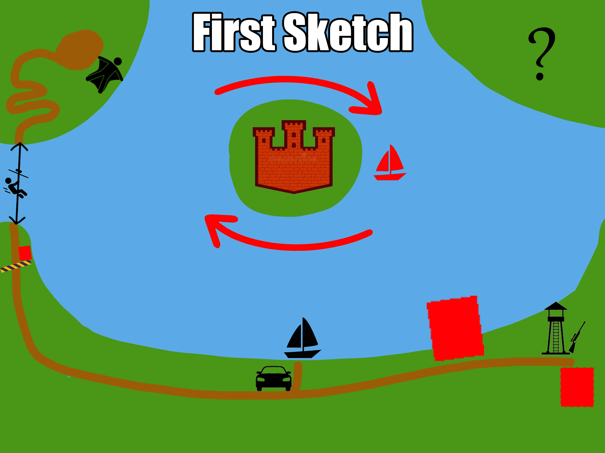
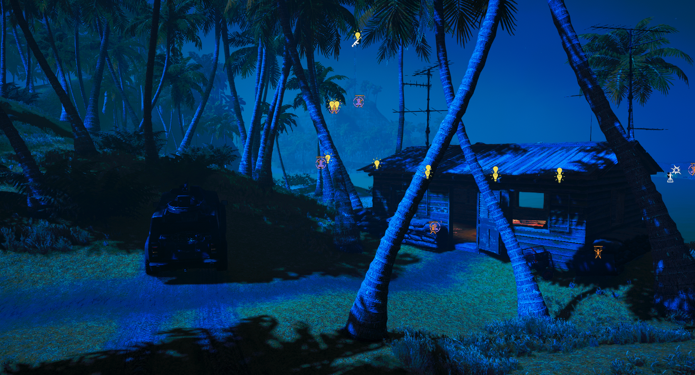
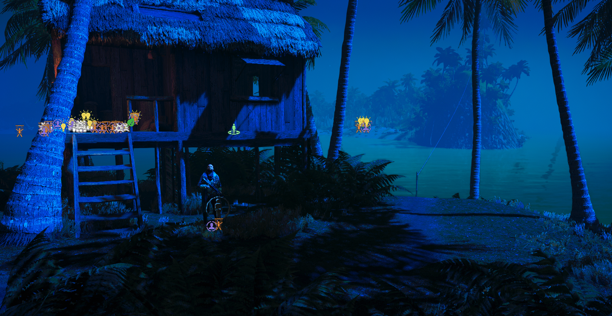
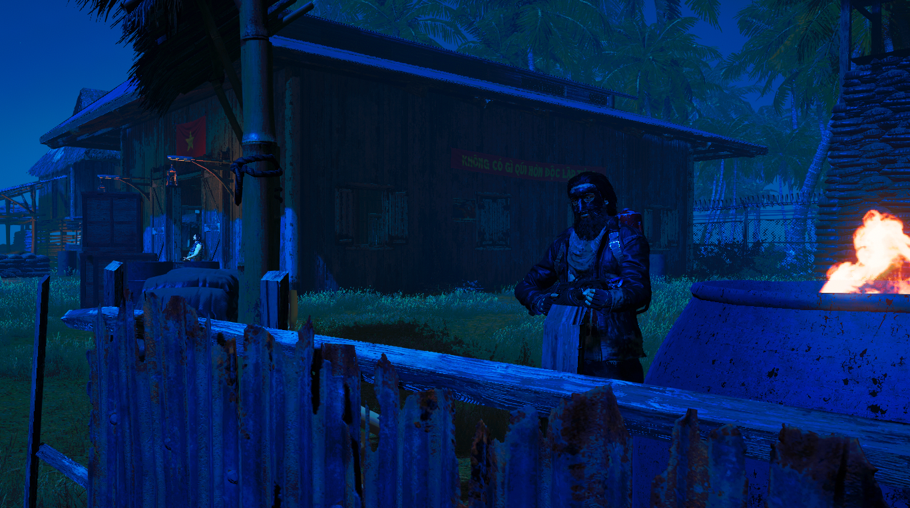
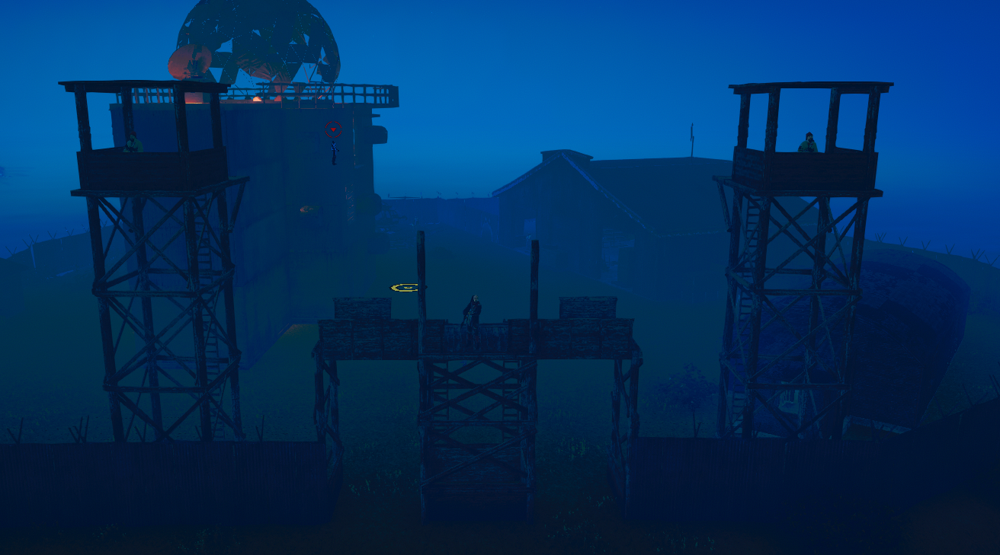

Description of project
I wanted to practice my Level Design skills from a mechanical but also a storytelling perspective. I used the Far Cry 5 Map Editor to save development time compared to making something from scratch in a different game engine, like Unity.
Overall Vision

Features
- Tropical archipelago with a FC1 vibe.
- Bounty Hunt objective → Goal is to eliminate a target and escape.
- Promotes several different approaches.
Area: The Checkpoint

Threat level
Low
Intended playstyle
Stealth
Description
The purpose of this checkpoint is to guards the path to the zipline, but it also communicates
with the other areas of the complex via radio. As this part of the complex isn't as important
to defend from a tactical standpoint and that the level is played at night, its threat level is
low.
Area: The Mountain

Threat level
Medium
Intended playstyle
Stealth
Description
The Mountain provides contact to the outside world for the entire complex through its tall radio
tower. This makes it something important to guard, thus the zipline to it as well as the path
up to the tower is reasonably guarded. There are two ways for the player to ascend it, taking
the road or using the grappling hook. Once on top, the player
can climb the radio tower to find a sniper rifle.
The idea behind this design is that the road is the obvious and safest route but using the
grappling hook poses more of a challenge but is in turn more rewarding for the player if they
succeed. Also, who doesn't love using grappling hooks? As using the grappling hook is the
approach I think most people will enjoy more, I attempt to guide the player towards it by
making use of an obtuse angle towards it. To not make it too obvious, I do hide it slightly by
putting it off of the beaten path in the hope that the player would feel a bit clever by not
taking the obvious path.
The radio tower is placed in such a way that the player can get a good sight picture of the
fort with the sniper rifle to take out some enemies. The assassination target remains
obscured, forcing the player to be clever or get closer to the island. They can simply wingsuit
from the tower or backtrack.
Area: The Storage

Threat level
High
Intended playstyle
Loud but stealth is possible.
Description
The Storage contains a lot of ammunition, health kits and armor scattered within it. It's the
main port of which soldiers get to and from the fort to replenish themselves. The area
is therefore heavily guarded. The player enter it either by smashing through the gates with a
vehicle or by climbing over the west wall via a fallen tree. The player can find boats here
that they can take to the fort.
Area: The Fort

Threat level
Very High
Intended playstyle
Both
Description
A highly guarded research facility and is the island of which the assassination target is
located. The player can get to it by either swimming, gliding or traveling by boat. It's
possible to get in via the air, main gate or a pipe on the west side of the island.
Lessons learned
It's very easy to either over or underthink every design decision as everyone is different and finds joy in different things. Initially chasing what YOU think is fun is helpful but needs to be careful as a designer to not only allow one playstyle but multiple, even if it wouldn't be your preference.